Magic Mirror
The Magic Mirror stands at the forefront of the self-improvement and wellness landscape, offering a transformative experience tailored to your individual needs. By harnessing the power of AI and drawing from extensive scientific research, it provides a unique blend of spiritual wisdom and cognitive insights. Crafted with care and precision, this innovative tool delves into the depths of the conscious and subconscious mind, guiding you on a profound journey of self-discovery and growth. With its user-friendly interface and personalized approach, the Magic Mirror empowers you to unlock your full potential and embrace a life of fulfillment and balance.
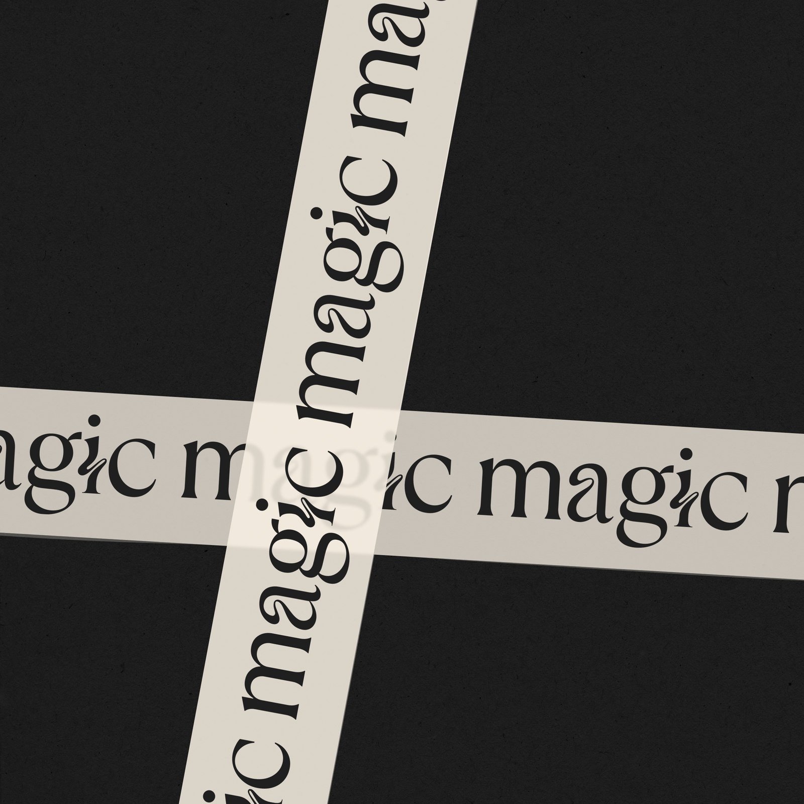
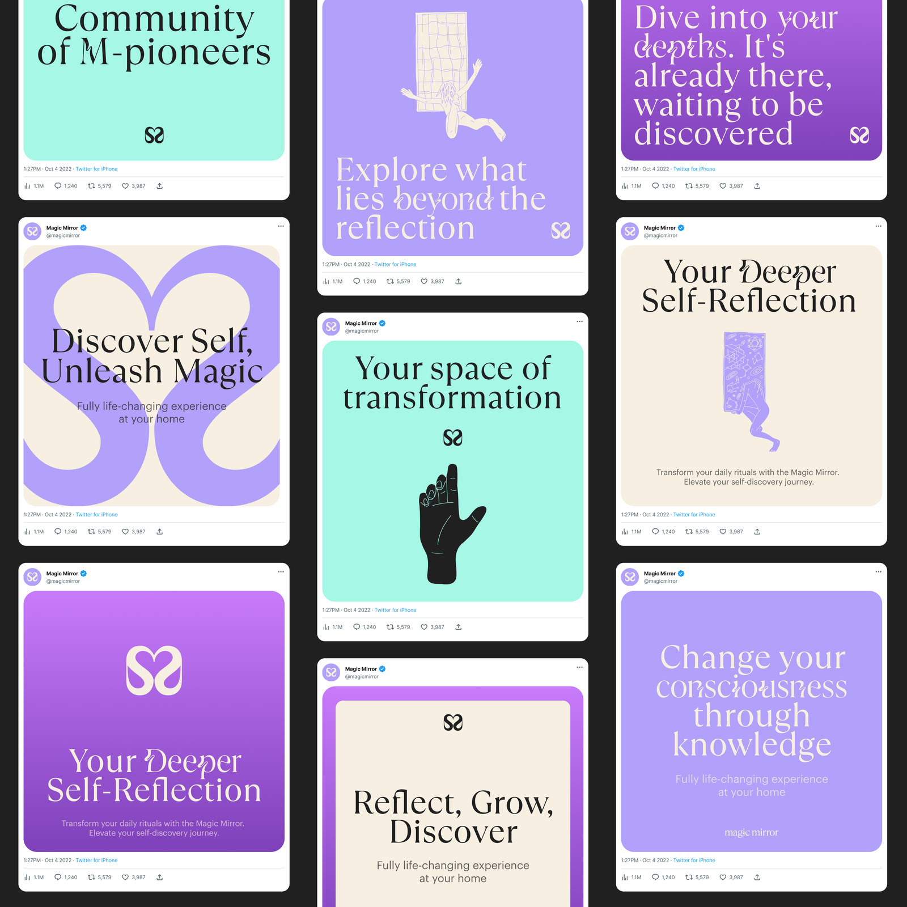
Mission: A world where each person unlocks their inner potential, discovers self-love, and embraces the surrounding beauty. How? By reshaping the personal development & spiritual consciousness movements. Brand Strategy: Deeper than Reflection. Positioning: The shortcut to a better self. Brand Archetypes: The Explorer, The Magician, The Sage. Values: Curiosity, Love & acceptance, Sharing Wisdom & Knowledge. TOV: Enthusiastic & engaging, Mysterious & guiding, Wise & thoughtful.
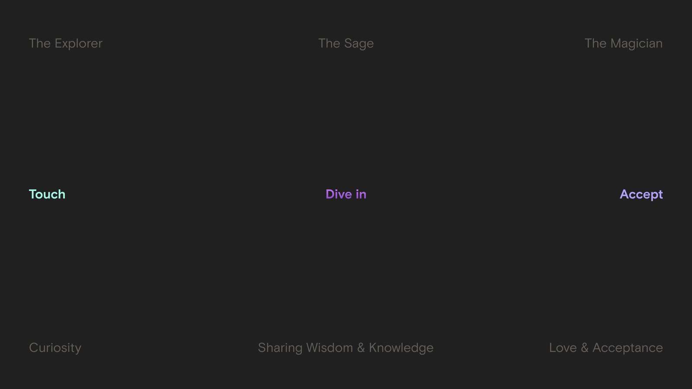
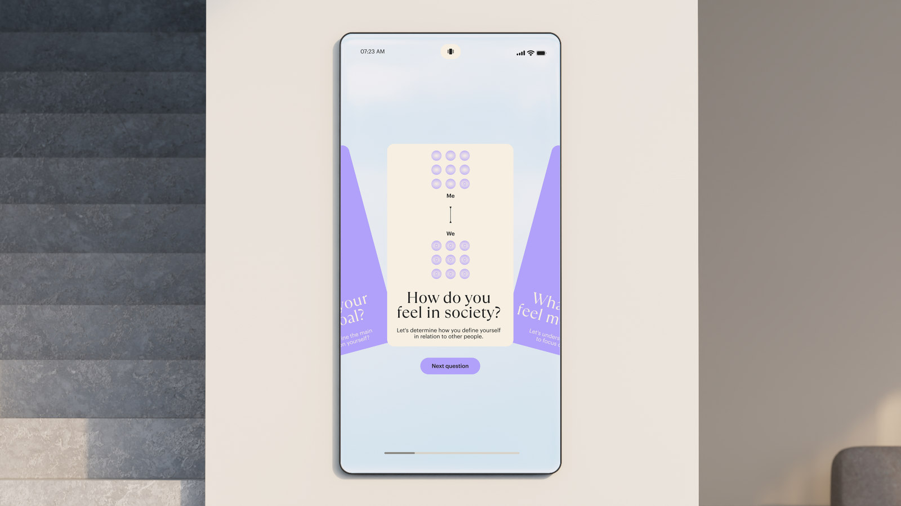
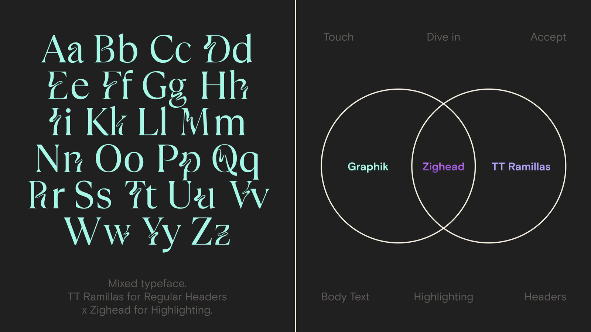
“Deeper than Reflection” carries both a literal and metaphorical meaning. On one hand, the phrase directly suggests that the Magic Mirror is more than just a reflective surface; it's about the hidden features and programs within. On the other hand, the metaphorical resonance of the name imbues the phrase with spiritual undertones. This duality balances the brand's identity, marrying technological innovation with a spiritual core. The sign embodies visible and invisible progress, layers, and duality, merging technological prowess with enchantment. It reflects living technologies and a faceless yet sentient love. Incorporating love and reflection, the symbol transforms the letter M into a nurturing companion, embracing all. The heart's simplicity covers the complexities of humanity and the universe, echoed in the sign's accessibility. The text logotype captures the essence of transformation, symbolizing the transition from the present to the future. "Deeper than Reflection" encapsulates the brand's philosophy of transcending mere reflection, exploring the journey between states.
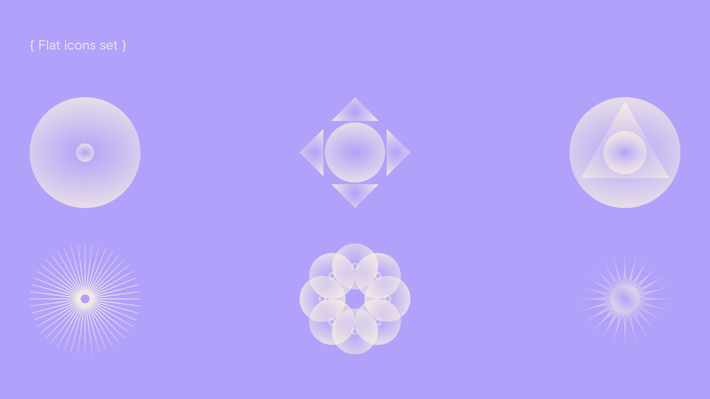
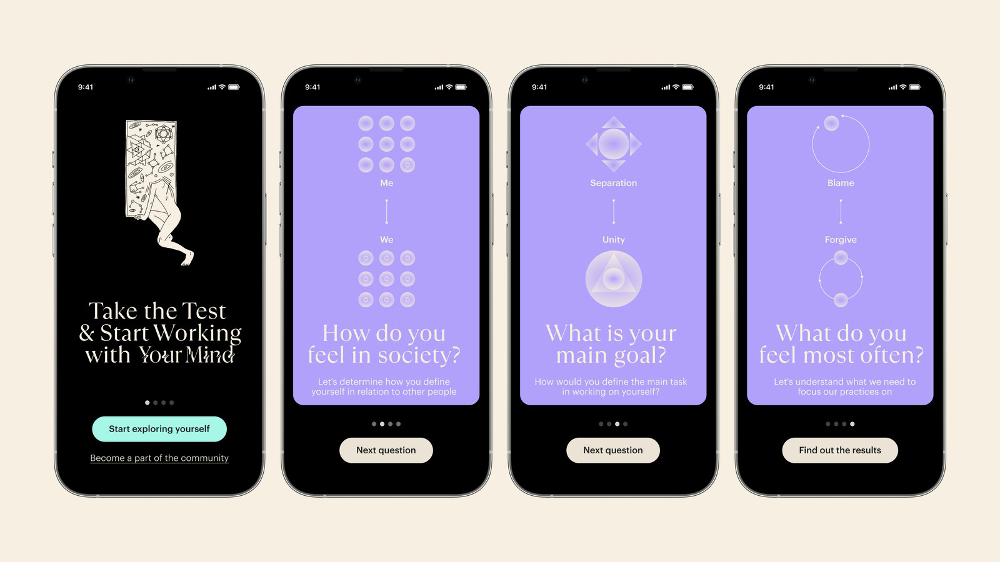
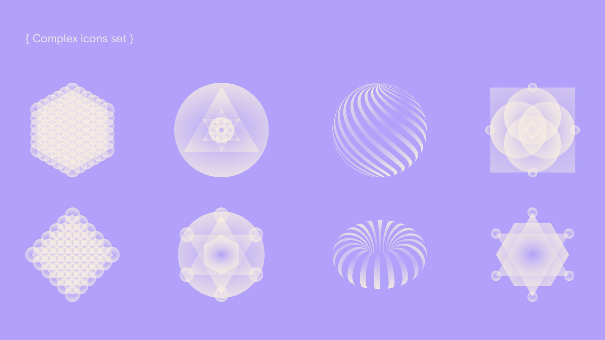
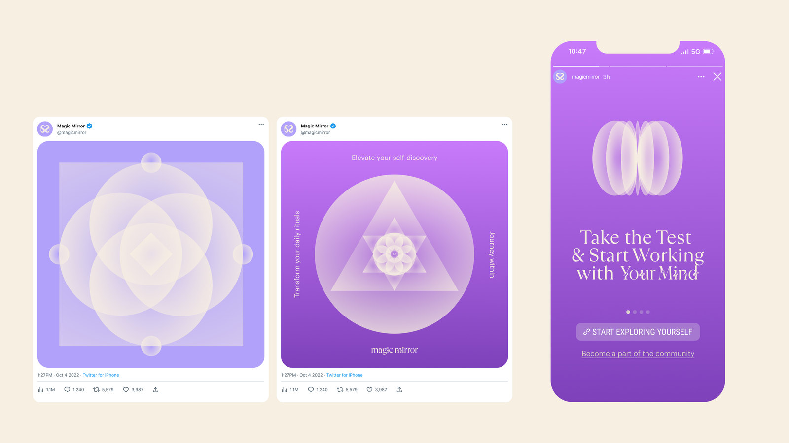
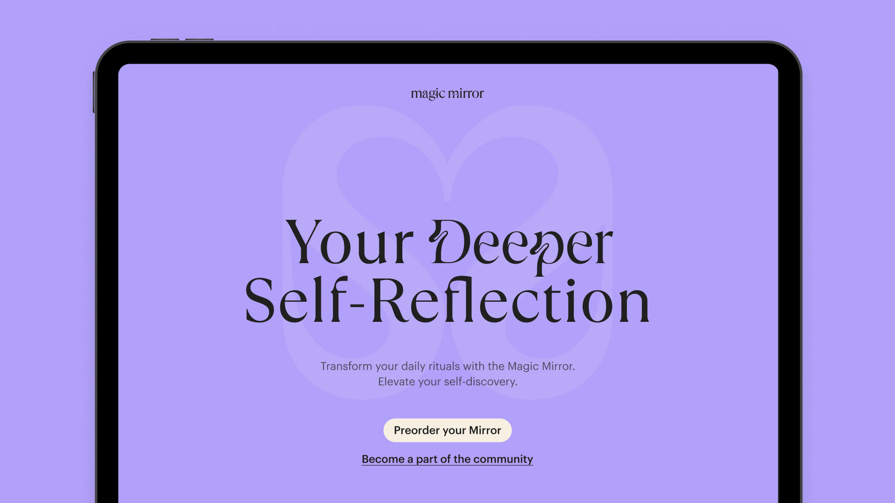
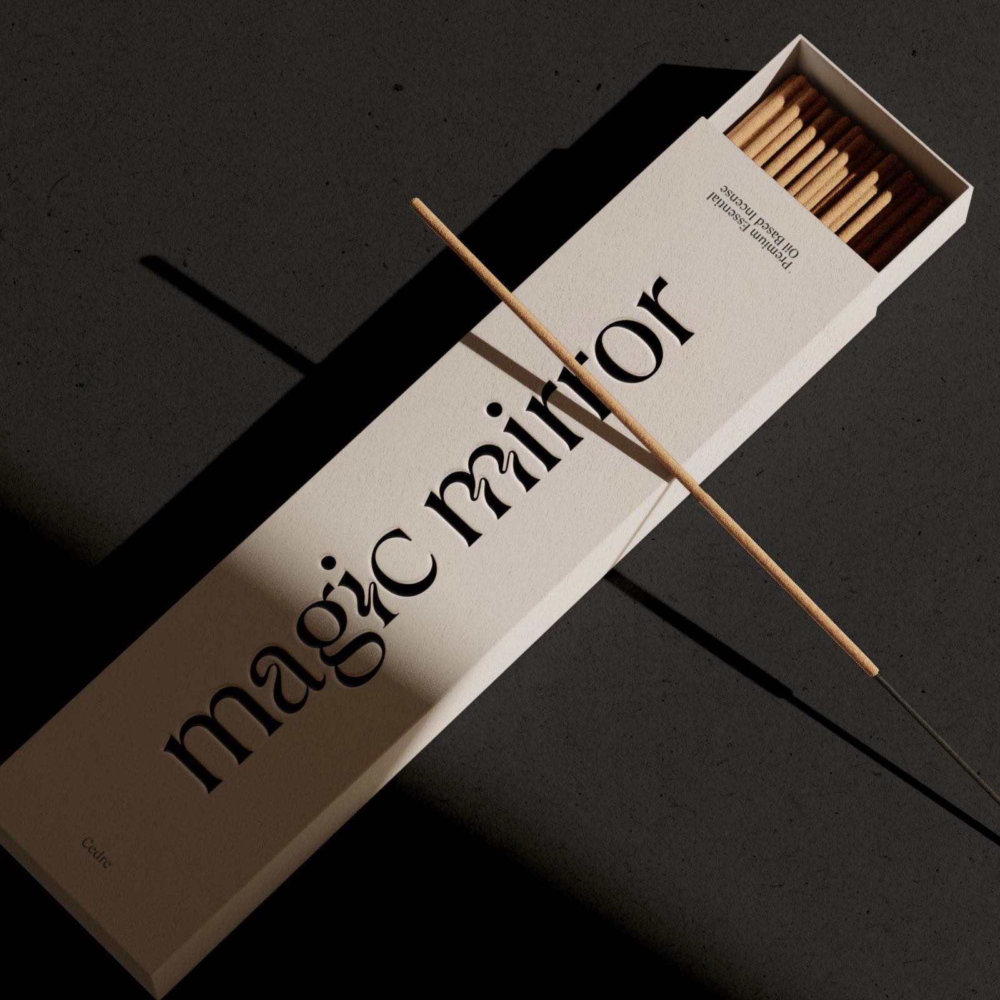
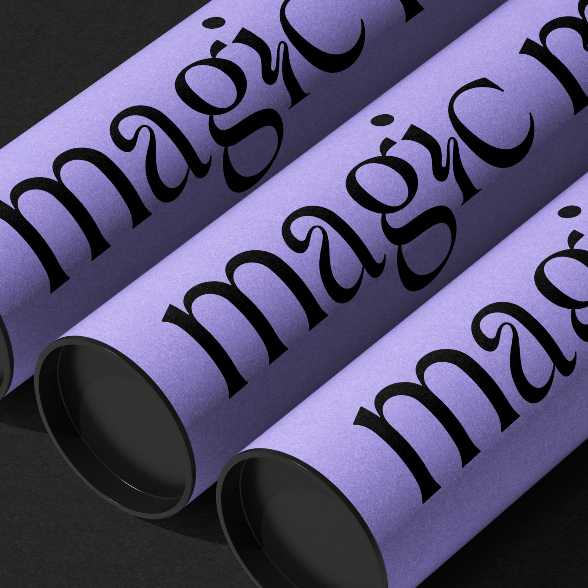
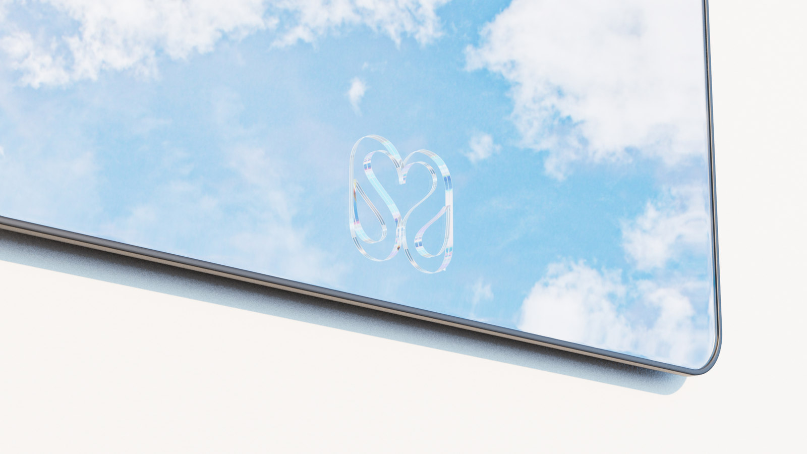